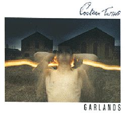

Music is my most important and prominent feature. I am consumed by the endless facets it can entail. As 2026 accelerates through our lives, I intend to carve out time for exploring new music by discovering an album every day of the year. Here's what I have been into lately:
Album of the Week
To maintain the continuity of the winter mood, I am choosing to recommend the Cocteau Twins. These two are more of a dismal style of music for winter. Coveted in the music scene, the Cocteau Twins set out for a certain formulaic and cosmic strain of music not seen elsewhere. They paved the way for modern shoegaze and dream pop. Often, it is nearly impossible to make out their gibberish, but this proves the value of their rhythm and production alone. To debut, these two released "Garlands", an album that is nothing short of avant-garde, sexy, eerie, and colorful in guitar and bass. In all it's glory:
Song of the Week
In honor of ringing in February, the Song of the Week is of course, a love song. I have a sincere admiration for the month of February. Regardless of the romantic aspect of Valentines Day, I find it heart warming to dedicate a day to show love to your loved ones, may that be friends or family. Like every holiday, it can turn into a capitalistic selling point, however the explosion of hearts, red and pink, "for two" deals, and talk of love brings me so much joy. Love is everywhere and it becomes undeniable as this month storms by. It can't get better than Ray LaMontagne's smooth voice and Sierra Ferrell's West Virginian drawl. What a beauitful duo.
At the moment, I am also into Nina Simone, Cameron Winter, Nick Drake, and any Pink Floyd song that whines a gorgeous guitar riff. I am always seeking recommendations, so please feel free to send any my way.
Press my sweet hover button to check out more.